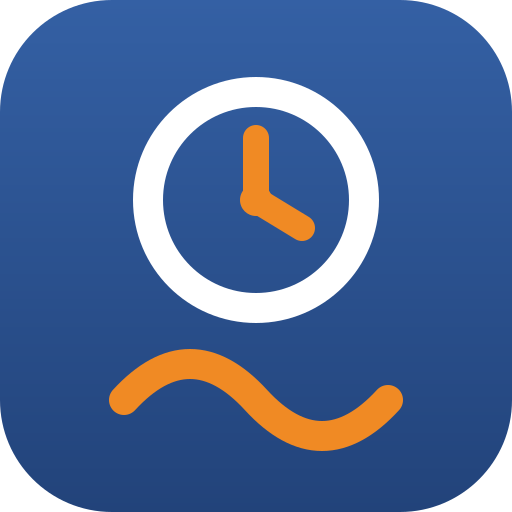

1. Open the Employee Portal1. פתחו את פורטל העובדים

GALIL Employee Portalפורטל העובדים של GALIL
Hours, leave, expenses and budgets · tasks · the Handbook · the Knowledge Base.שעות, היעדרויות, הוצאות ותקציבים · משימות · מדריך למשתמש · מאגר ידע.
2. Add it to your home screen2. הוסיפו אותו למסך הבית
- Open the portal's link in Safari.
- Tap the Share button at the bottom of the screen (top right on iPad). On iOS 26, tap ••• first, then Share.
- Scroll down and tap Add to Home Screen.
- Keep the name GALIL Portal and tap Add.
- Open the portal from the new icon and sign in with your GALIL account.
- פתחו את הקישור לפורטל ב-Safari.
- הקישו על כפתור שיתוף בתחתית המסך (למעלה בצד באייפד). ב-iOS 26 הקישו קודם על ••• ואז על שיתוף.
- גללו למטה והקישו הוסף למסך הבית.
- השאירו את השם GALIL Portal והקישו הוסף.
- פתחו את הפורטל מהסמל החדש והיכנסו עם חשבון GALIL שלכם.
- Open the portal's link in Chrome.
- Tap the menu ⋮ in the top corner.
- Tap Add to Home screen, then Install.
- Open the portal from the icon and sign in with your GALIL account.
- פתחו את הקישור לפורטל ב-Chrome.
- הקישו על התפריט ⋮ בפינה העליונה.
- הקישו הוספה למסך הבית ואז התקנה.
- פתחו את הפורטל מהסמל והיכנסו עם חשבון GALIL שלכם.
- Open the portal's link in Microsoft Edge or Google Chrome.
- Click the install icon at the end of the address bar.
- Click Install. The portal opens in its own window.
- Sign in with your GALIL account.
- פתחו את הקישור לפורטל ב-Microsoft Edge או ב-Google Chrome.
- לחצו על סמל ההתקנה בקצה שורת הכתובת.
- לחצו התקנה. הפורטל נפתח בחלון משלו.
- היכנסו עם חשבון GALIL שלכם.
3. Connect it to GALIL's data3. חברו אותו לנתונים של GALIL
GALIL GitHub access keyמפתח הגישה של GALIL ל-GitHub
The portal saves everyone's work to GALIL's shared GitHub repository. The key isn't published on this page: ask Danny Gelman for it and you'll get it privately. Please don't forward it or post it anywhere.
הפורטל שומר את העבודה של כולם במאגר GitHub המשותף של GALIL. המפתח לא מתפרסם בדף הזה: בקשו אותו מדני גלמן והוא יישלח אליכם באופן אישי. נא לא להעביר אותו הלאה ולא לפרסם אותו בשום מקום.
- The first time you open WorkDesk or Taskana, the portal asks for a GitHub access token.
- Paste the key Danny sent you into the field (it reads
github_pat_…). - Tap Save & continue. Your work now saves automatically.
- בפעם הראשונה שפותחים את WorkDesk או את Taskana, הפורטל מבקש אסימון גישה של GitHub.
- הדביקו בשדה (כתוב בו
github_pat_…) את המפתח שדני שלח לכם. - הקישו שמור והמשך. מעכשיו העבודה שלכם נשמרת אוטומטית.
Once per device. The key stays in that browser only. Do this once on each phone or computer you use.
פעם אחת לכל מכשיר. המפתח נשמר רק בדפדפן הזה. עושים את זה פעם אחת בכל טלפון או מחשב שמשתמשים בו.
Questionsשאלות
- I don't see "Add to Home Screen" or "Install".
- You're probably inside another app's built-in browser (Outlook, Teams, WhatsApp…). Open its menu, choose Open in Safari / Open in Chrome, and try again.
- The portal says the key expired or was refused.
- It will ask for the key again. Ask Danny for the current key and paste it once more.
- Can I use the portal in Hebrew?
- Yes. Tap EN / עב in the portal and everything switches, right to left.
- Something else isn't working?
- Contact Danny and say which phone and browser you're using.
- אני לא רואה "הוסף למסך הבית" או "התקנה".
- כנראה שאתם בתוך הדפדפן המובנה של אפליקציה אחרת (Outlook, Teams, WhatsApp…). פתחו את התפריט שלה, בחרו פתיחה ב-Safari / פתיחה ב-Chrome, ונסו שוב.
- הפורטל אומר שהמפתח פג או נדחה.
- הוא יבקש את המפתח שוב. בקשו מדני את המפתח העדכני והדביקו פעם נוספת.
- אפשר להשתמש בפורטל בעברית?
- כן. הקישו EN / עב בפורטל והכול מתחלף, מימין לשמאל.
- משהו אחר לא עובד?
- פנו לדני וציינו באיזה טלפון ובאיזה דפדפן אתם משתמשים.
Ready? Open the portal and get started.מוכנים? פתחו את הפורטל והתחילו.
Open the Employee Portalפתיחת פורטל העובדים